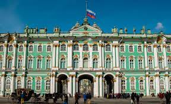
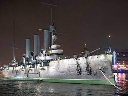
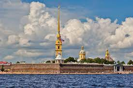
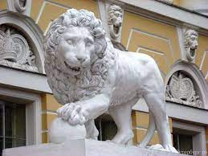
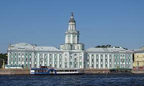
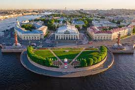
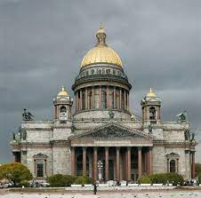
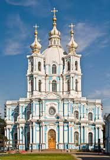
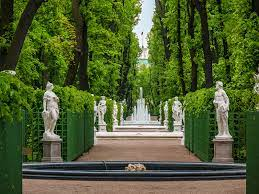

| Главная | Государственный Эрмитаж | Здание главного Адмиралтейства | Петропавловская крепость | Смольный монастырь |
|---|
Гимн Санкт-Петербурга
На нашей планете есть множество естественных и искусственных объектов, которые поражают наше воображение. Это пирамиды в Египте и Мексике, истуканы на острове Пасхи, дворец Тадж-Махал в Индии, Стоунхендж в Великобритании, Ниагарский водопад в Канаде, Большой каньон в Колорадо и многие другие. Их называют «Чудеса света». Ежегодно сотни тысяч туристов приезжают посмотреть на эти диковины, принося ощутимый доход государствам, на территории которых они расположены.
Однако не обязательно ехать в далекие страны, чтобы увидеть удивительные природные ландшафты, памятники старины и произведения архитектуры. В нашей стране тоже есть уникальные объекты, которые находятся в одном из самых красивых городов России. Представляем Вам Санкт-Петербург.
|  |  | |
|  |  | |
|  |  |  |
| |
 |  |